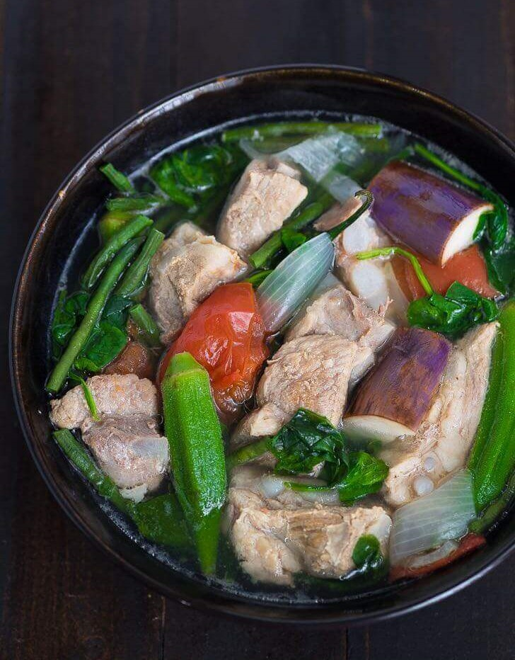

SINIGANG (Filipino Sour Soup)

Description:
Sinigang is a beloved Filipino dish known for its distinct sour flavor, which comes from tamarind.
This comforting soup is typically made with pork and a variety of fresh vegetables, creating a hearty and healthy meal perfect for any occasion.
Whether served during rainy days or family gatherings, this dish embodies the warmth and love of Filipino home cooking.
- Prep:10 minutes
- Cook: 1 hour
- Servings: 4
Ingredients:
- 2 lbs. pork belly
- 1 lb. young tamarind (see notes)
- 1 bunch water spinach, chopped
- 8 pieces string beans, cut into 2-inch pieces
- 2 pieces eggplants, sliced
- 1 piece daikon radish (optional)
- 8 pieces okra
- 2 pieces tomatoes, sliced into wedges
- 2 pieces long green peppers
- 1 piece onion, sliced into wedges
- 2 quarts water
- Fish sauce and ground black pepper, to taste
Instructions:
- Boil young tamarind in 2 quarts of water for 40 minutes. Filter the tamarind broth, squeezing the tamarind to extract remaining juices.
- In a cooking pot, pour the tamarind broth. Add onion, pork belly, and half the tomatoes. Let it boil.
- Skim off scum, add 1 tbsp fish sauce, cover, and simmer for 1 hour.
- Add daikon radish and eggplants. Cook for 5 minutes.
- Stir in long green peppers, string beans, remaining tomatoes, and okra. Cook for 3 minutes.
- Add water spinach stalks, season with fish sauce and pepper, and cook for 2 minutes.
- Turn off the heat, add water spinach leaves, and let residual heat cook them for 3 minutes. Serve and enjoy!
Notes
- Belly: This is an ideal cut for sinigang because the fat keeps the meat moist and tender, enhancing the dish’s flavor. You can also use pork shoulder, spare ribs, or neck bones.
- Young Tamarind: For a sour soup, stick with young tamarind. Combining young and ripe tamarind can add a subtle sweetness if desired.
- Daikon Radish: While optional, daikon radish adds a unique texture and flavor to the dish.
- Taro (Gabi): Adding taro makes the soup thicker and creates a variation known as sinigang na baboy with gabi.